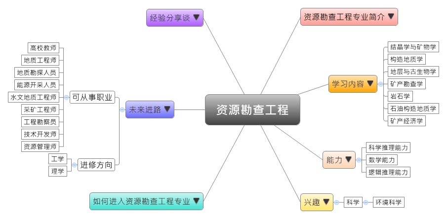

- 专业大观园
-

- 专业介绍
-
什么是资源勘查工程专业？
资源勘查工程主要包含固体矿产勘查、石油与天然气地质勘查两个研究方向，专业涉及从选区勘查、评价到矿产开发过程中的地质理论、操作技术、经济与环境平衡等主题内容，此专业是一个高度综合性与应用性的工科专业。矿产或非矿产资源都是国民经济的物质基础，虽然资源勘查工作专业的就业面较窄，但国家对资源勘查工作非常重视，且此专业是很实在的技术活，所以就业形势仍旧不错。在职场上，毕业生可担任资源寻找和勘查的开采人员、探勘人员等；在生活中，具备资源勘查工程专长有助于了解地球组成，能够提高环境保护的意识，在经济发展与生态环境中寻求平衡，并营造永续的生存环境。
资源勘查工程专业除了训练学生具有对矿床地质、矿床分布规律等综合分析和研究的初步能力，也通过地质调查和室内外矿产资源勘查的技术学习，让学生能成为兼具资源勘查和工程管理的高级工程技术专才。
资源勘查工程户外实习教学 运用机器人探测仪器勘查资源
- 学习内容
-
资源勘查工程专业学生主要学习基础与应用地质、最新资源勘察技术的理论与应用知识，学生须接受资源地质调查与找矿（固体、液体、气体矿产）勘查等室内外的训练，学生毕业后能综合分析地质特性与矿产分布，并运用所学进行合理且有效的资源评价与矿产管理。
本专业学习方向通常分为两类：固体矿产勘查、石油与天然气地质勘查；其他学校也有开设综合勘查技术或油气田勘查开发方法等课程，为学生未来就业做好准备。资源勘查专业主干课程有：地球科学概论、结晶学与矿物学、普通地质学、构造地质学、地层与古生物学、矿床学、矿产勘查学、矿业政策法规、岩石学、石油物探、石油构造地质学、石油地质学、沉积岩石学、矿产经济学、油气田地下地质……等。此外，学生须加选一门以上的专业实验课程，如：常见矿物、岩石、化石等鉴定实验、矿石鉴产与分析、钻探与取芯、电法与地震资料解释与分析进行选修。
本专业可以习得的知识与获得之能力、技能列点：第一，熟悉资源勘查与工程学的基础理论，以及GIS、GPS、RS技术应用的能力；第二，熟悉矿床地质、成矿条件、矿产分布规律，并能进行综合分析与研究、地质解释和运用的能力；第三，熟悉国家矿产资源与环境的政策，并能分析、评价和规划矿产与非矿产的资源环境。
- 能力
-
资源勘查工程专业学生，需具备以下能力：
相关性向能力 说明 科学推理能力  掌握进行区域地质的调查能力
掌握进行区域地质的调查能力
具有对区域地质综合分析的能力
掌握矿产资源普查勘探的室内外工作方法数学能力 有数学推导的能力
具备解析资源地质分析结果的能力逻辑推理能力 能进行资源合理运用的能力
具备批判与独立思考的能力
能够提出资源分布的假设并进行验证
- 兴趣
-
若你对下列活动或事物有高度兴趣，可考虑进入资源勘查工程专业学习：
科学 环境科学 对天然资源勘查充满好奇
喜爱从事户外劳动的工作
对大自然与物质，如海洋、矿物的变化现象感兴趣
- 如何进入此专业
-
下面列举开设资源勘查工程专业的211工程重点大学院校：
- 未来进路
-
可从事职业
近年来，因为资源需求增加，国家对资源勘查工作非常重视，虽然就业面相对较窄，但薪水相对都是不错的。此专业毕业生可以进入资源勘查、开采与管理产业，从事地质勘探、能源开采，甚至是销售或营销业务；在政府技术或行政部门，可从事勘查技术开发和资源管理工作；亦可在高校或科研部门从事学术与教学的工作。在工作职场上皆能发挥地质调查与分析、资源评估等专长：
行业 职业 采矿业 地质工程师、能源开采人员、采矿工程师 专业技术服务业 水文地质工程师、地质勘探人员、物探人员、技术工程师 国家机构（地质矿产、
土地管理、地质勘查）勘查技术员、工程勘察员、资源勘查员、技术开发师、资源管理师 教育 高校教师 科学研究 资源勘查工程研究员 进修方向以下列举资源勘查工程专业毕业生可以继续修读之学科门类、一级学科与硕士点：
学科门类 一级学科 硕士点 工学 地质资源与地质工程地质工程、矿产普查与勘探、地球探测与信息技术、非常规油气地质与勘探、矿产资源经济与技术、资源与环境遥感、能源地质工程、石油与天然气地质学、环境地质学、资源管理工程、资源产业经济、地下水科学与工程、钻井工程、非传统矿产资源开发 工程（专业硕士）地质工程、矿业工程、安全工程、石油与天然气工程 理学 地质学矿物学、岩石学、矿床学、构造地质学、石油地质学、能源地质学、数字地质科学
- 经验分享谈
-
中国海底科学的奠基人——金翔龙
金翔龙长期致力于中国边缘海的海底勘查与研究，并率先开展中国渤海、黄海、东海的地球物理探测，对中国海的构造格局、地壳性质与演化，以及边缘海的演化模式等提出过重要论述，在国内外有重要影响。在大洋海底勘探开发方面，代表中国在联合国争得东太平洋理想矿区，系统研究陆架浅海的构造格局和油气远景，以及冲绳海槽的地壳性质与演化；在南海首次取得深海地壳属性的重要证据，发现含钴型锰结壳和具油气潜力的陆坡盆地，为中国进入大洋勘探开发的国际先进行列做出了贡献。
在金翔龙的领导下，国家海洋局海底科学重点实验室于2011年在西南印度洋圈定面积为1万平方公里的多金属硫化物合同区，于2014年又在西北太平洋获得面积为3000平方公里的富钴结壳合同区，使我国一举成为世界上第一个在国际海底区域拥有“三种资源、三块矿区”的国家。
他主要研究方向为海底构造与海洋地球物理。曾任中国地质学会和中国大洋矿产资源研究开发协会的理事，及联合国海底管理局与海洋法庭筹委会培训专家委员会的委员。1997年当选为中国工程院院士。由于在创建和发展海底科学中所作出的开拓性的贡献，他被列为“中国海底科学的奠基人之一和学科带头人”。【资料来源：百度百科 金翔龙.】